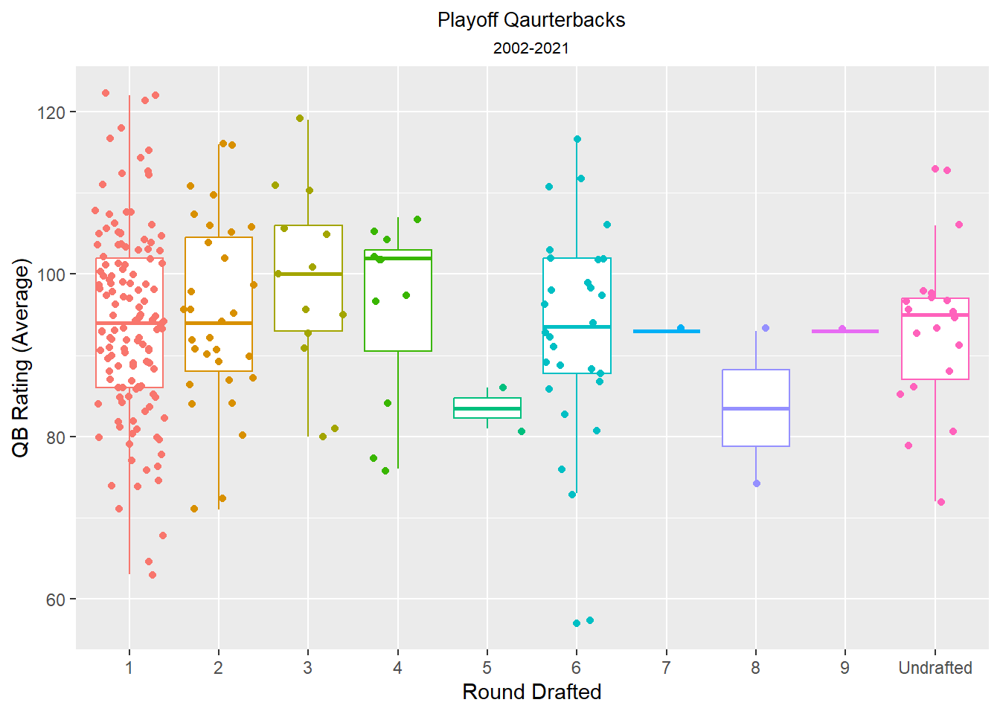

NFL QB Case Study
Cornelius Williams
2023-05-13
Questions to be answered
- Does it take a good defense to win the Superbowl?
- Does it take a great quarterback play to win the Superbowl?
- Does it matter which round a team drafts a quarterback?
- Can a team draft a quarterback in a later round and pair them with a good defense to win?
- Which rounds are quarterbacks that make it to the playoffs and Superbowl drafted in?
In my data analysis case study I set out to answer these questions by gathering data over a twenty year period that included information listed below.
- NFL defensive stats
- Quarterback regular season and playoff stats
- Superbowl team and quarterback participants
- Rounds that each quarterback was drafted
In this graph I used a boxplot to show the number of of quarterbacks that made the playoffs from 2002 to 2021.
- The results shown in this boxplot show that over the period of 2002 to 2021 that the majority of the quarterbacks that made it to the playoffs were drafted in the first round.

Here I used a lollipop chart to show how the average quarterback rating compare based on the round drafted.
- The results shown in this bar chart shows that even though quarterbacks drafted in the 1st and 2nd round were tie with the highest average quarterback rating, the next it’s within five points of the next five positions.

This bar chart shows the average defensive ranking of quarterbacks by round drafted.
- This chart shows the average defensive ranking of quarterbacks for the first, second, and third round were the same. The quarterbacks who were drafted in the fourth, sixth, or undrafted were only one ranking lower.

This facet plot shows the number of different quarterbacks that participated in the Superbowl from 2002-2021.
- In this plot it shows how more quarterback from the first round participated in the last twenty Superbowls than all others combined.

Conclusion
- The data has shown that over the twenty year period that teams with a quarterback drafted in the first round have a not only made the playoffs more, they also were more likely to make it to the Superbowl.
- The data also shows that with the exception of quarterbacks drafted in the fifth round, the average passer rating of all quarterbacks is within seven points.
- When I look at the defensive rankings based on round drafted, only quarterbacks drafted in the ninth round had a defense in the top fifteen. Out of 32 teams most defenses were ranked in the bottom half of the league.
- Taking in the whole picture the data shows that since most quarterbacks having similar passer ratings and defensive rankings, that drafting a quarterback in the first round is a team’s best chance to make the playoffs or the Superbowl.